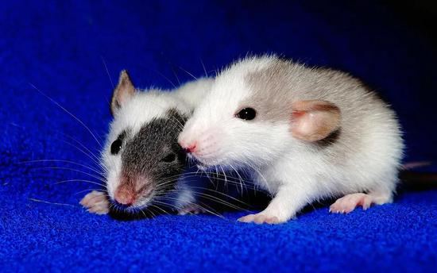

研究人员如今发现了侵袭性乳腺癌细胞避开免疫系统转移或传播到身体其他部位的新机制。这有助于开发靶向该过程的治疗，阻止或预防乳腺癌转移，并减少死亡。相关论文近日刊登于《细胞生物学杂志》。自然杀伤细胞（一种免疫系统）可通过诱导癌细胞死亡从而限制其转移。但患者的癌细胞仍会转移，因此必定存在不为人知的逃避途径。
科学家用小鼠研究癌症免疫治疗新途径。

因此，美国约翰斯·霍普金斯大学的 Isaac Chan 及同事，在实验室中实时研究了自然杀伤细胞与侵袭性乳腺癌细胞之间的相互作用。结果发现，转移性乳腺癌细胞可以重编程自然杀伤细胞，使它们停止杀伤癌细胞，反而协助其转移。
Chan 说：“该研究确定了癌细胞拉拢利用免疫系统的新策略。如果我们能够阻止或逆转自然杀伤细胞重编程，可能会带来一种阻止转移和减少乳腺癌死亡率的新方法。”
“我们的研究显示自然杀伤细胞可选择性地靶向启动转移过程的细胞，并揭示了癌细胞诱使免疫系统协助它们的途径。该研究还凸显了多学科癌症研究的力量。该项目联合了肿瘤内科学、细胞生物学、免疫学和生物医学工程学专家了解肿瘤转移的机制。”论文通讯作者、 约翰斯·霍普金斯大学教授 Andrew Ewald 说。
借助分子表达谱和计算分析，研究人员能够描绘免疫细胞与癌细胞之间每种疑似的分子间相互作用，并识别可能调控细胞间通信的相互作用。当研究人员阻断这些抑制信号时，自然杀伤细胞会继续充当“好人”，并不断清除癌细胞。
研究人员在论文中也描述了在乳腺癌转移小鼠模型中逆转这一重编程过程的新免疫治疗策略。
研究人员表示，其他癌症类型可能也涉及这一过程。靶向自然杀伤细胞的免疫治疗也可与刺激T细胞对抗癌症的现有免疫治疗联合使用。
来自: 中国科学报